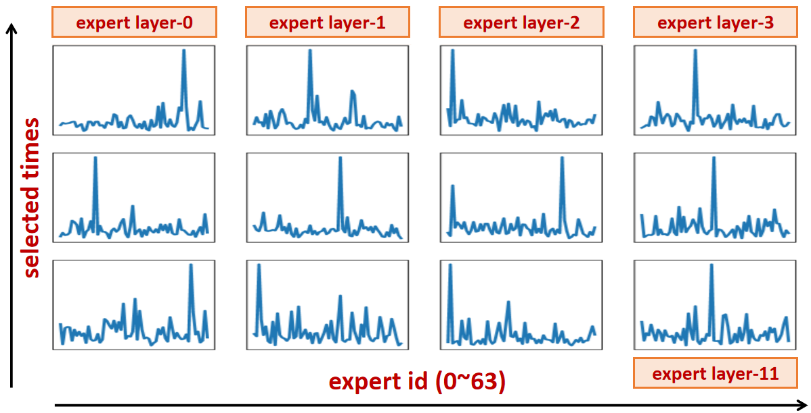

About me
I am a professor in Department of Computer Science at Tianjin University and a member of TANK Lab, led by Prof.Keqiu Li. I received my Ph.D. degree from Networked Systems Lab at University of Southern California, advised by Prof.Ramesh Govidan. I obtained my B.S. degree at Shanghai Jiao Tong University, advised by Prof. Xinbing Wang.
My research interests include large language model (LLM) systems, retrieval augmented generation (RAG) and AI for Science (AI4Science). My recent work delves into developing inference systems capable of deploying LLM and AI4Science models in large-scale cloud clusters, aiming for peak performance, efficiency and scalability through innovative techniques such as computational acceleration, parallel optimization, and resource orchestration. In collaboration with research institutions like IBM Watson, Samsung Research and Microsoft Research, I have published tens of papers at the leading conferences/journals, including SoCC, Ubicomp, INFOCOM, IWQoS, ASPLOS, SIGCOMM, TPDS and TC. My research has been funed by NSFC, etc. I have received honors such as U35 Outstanding Talent Award from Tianjin University and Best Paper Award from ACM SoCC'24.
{kind=link}
I have developed Twen.ai, an university Q&A large language model. Empowered by RAG techniques, Twen addresses daily questions from students and faculties in areas such as daily life, scholarship selection, further studies, etc. Twen is officially released in April 2024, and serves thousands of requests each day since then. Recently, I am actively developing Xiaotian, the official AI mentor that is available to all students at Tianjin University since September 2025.
I am looking for self-motivated students interested in building systems for large language model and AI4Science. Feel free to drop me an email if you want to join us!
Research
My research is aiming to build inference systems capable of deploying LLM and AI4Science models in large-scale cloud clusters with peak performance, efficiency and scalability.
-
Large Language Model System
-
Seving Classic LLM: Serving LLM applications brings new challenges due to their huge memory consumption and unpredictable output length. We designed novel LLM inference systems (qLLM, tgLLM) to minimize job completion time across LLM requests and to maximize model throughput and resource utilization. We also built various inference systems (InferRAG, InferMM) to manage computation resources under scenarios such as RAG and multi-modal.

- Serving Specialized LLM: Recent innovations in LLM architecture also bring new challenges. We designed specialized inference systems (SuperSpec, ParaMoE) to optimize the inference pipeline for speculative decoding and mixture of expert. Besides, we also investigated interesting topics such as lookahead decoding, LoRA serving, kv-cache optimization, etc. 
-
Seving Classic LLM: Serving LLM applications brings new challenges due to their huge memory consumption and unpredictable output length. We designed novel LLM inference systems (qLLM, tgLLM) to minimize job completion time across LLM requests and to maximize model throughput and resource utilization. We also built various inference systems (InferRAG, InferMM) to manage computation resources under scenarios such as RAG and multi-modal.
-
Deep Neural Network System
-
Latency Sensitive Inference: To guarantee good user experiences, DNN-based applications are usually associated with a latency objective. We designed various model orchestration systems (Harpagon, DeepLat, TopInfer) to minimize the serving cost under latency objective via techniques such as dynamic batching, request dispatching and configuration decoupling. We also built various resource scaling systems (SLOpt, DeepChain) to maximize system goodput under bursty workload via techniques such as AoT compilation and model pre-warmup.

- Complex Scenario: Given the use cases, DNN-based applications face various deployment requirements. We have designed multi-stage inference systems (Scrooge, Rim, Olympian) to manage DNN models in edge/cloud GPU clusters via techniques such as model co-location and model promotion. We also built specialized systems (ALPS, HRL) to handle complex scenario such as multi-modal input and heterogeneous hardware.
-
Latency Sensitive Inference: To guarantee good user experiences, DNN-based applications are usually associated with a latency objective. We designed various model orchestration systems (Harpagon, DeepLat, TopInfer) to minimize the serving cost under latency objective via techniques such as dynamic batching, request dispatching and configuration decoupling. We also built various resource scaling systems (SLOpt, DeepChain) to maximize system goodput under bursty workload via techniques such as AoT compilation and model pre-warmup.
Selected Publications
- [ASPLOS 26] PAT: Accelerating LLM Decoding via Prefix-Aware Attention with Resource Efficient Multi-Tile Kernel (CCF-A) [paper][code][slides]
- [TPDS 26] Accelerating ML Inference via Opportunistic Pre-Loading on Serverless Clusters (CCF-A) [paper]
- [Preprint 26] RAGPulse: An Open-Source RAG Workload Trace to Optimize RAG Serving Systems [paper][code][huggingface]
- [Preprint 26] KernelBand: Boosting LLM-based Kernel Optimization with a Hierarchical and Hardware-aware Multi-armed Bandit [paper]
- [Preprint 26] ServerlessLoRA: Minimizing Latency and Cost in Serverless Inference for LoRA-Based LLMs [paper]
- [TC 25] TightLLM: Maximizing Throughput for LLM Inference via Adaptive Offloading Policy (CCF-A) [paper]
- [TC 25] SLOpt: Serving Real-Time Inference Pipeline with Strict Latency Constraint (CCF-A) [paper]
- [INFOCOM 25] Harpagon: Minimizing DNN Serving Cost via Efficient Dispatching, Scheduling and Splitting (CCF-A) [paper]
- [INFOCOM 25] Lark: A Buffer-aware Building Block for Programmable Packet Scheduling in Datacenters (CCF-A) [paper]
- [SoCC 24] Pre-Warming is Not Enough: Accelerating Serverless Inference With Opportunistic Pre-Loading (CCF-B, Best Paper Award) [paper]
- [SIGCOMM 24] PPT: A Pragmatic Transport for Datacenters (CCF-A) [paper]
- [ASPLOS 24] FUYAO: DPU-enabled Direct Data Transfer for Serverless Computing (CCF-A) [paper]
- [IWQoS 23] High-throughput Sampling, Communicating and Training for Reinforcement Learning Systems (CCF-B) [paper]
- [TPDS 23] Accelerating Data Delivery of Latency-Sensitive Applications in Container Overlay Network (CCF-A) [paper]
- [SoCC 21] Scrooge: A Cost-Effective Deep Learning Inference System (CCF-B) [paper]
- [IoTDI 21] Rim: Offloading Inference to the Edge [paper]
- [Middleware 18] Olympian: Scheduling GPU Usage in a Deep Neural Network Model Serving System (CCF-B) [paper]
- [Ubicomp 16] ALPS: Accurate Landmark Positioning at City Scales (CCF-A) [paper]
- [INFOCOM 14] Critical Sensing Range for Mobile Heterogeneous Camera Sensor Networks (CCF-A) [paper]
Honors and Awards
- Outstanding Undergraduate Thesis Advisor, Tianjin University, 2025
- U35 Outstanding Talent Award, Tianjin University, 2025
- Best Paper Award, ACM SoCC, 2024
- Outstanding Young Academic Talent Award, Tianjin University, 2024
- Qiming Scholar, Tianjin University, 2023
- Chun-Tsung Scholar (1st at SJTU), Shanghai Jiao Tong University, 2014
- Valedictorian at SEIEE, Shanghai Jiao Tong University, 2014
Teaching
- Computer Systems, TJU, 23Spring, 24Spring, 25Spring
- Design and Analysis of Algorithms, TJU, 23Fall, 25Spring
- Introduction to Internetworking, USC, 16Spring
Students
PhD Students- Zhixin Zhao (2022 - Now)1
- Guotao Yang (2023 - Now)1
- Liang Zheng (2024 - Now)2
- Ziqi Gong (2023 - Now)
- Chen Shen (2023 - Now)
- Jingyuan Xiao (2024 - Now)
- Jinjun Yi (2024 - Now)
- Zhengchao Wang (2024 - Now)2
- Tao Wang (2024 - Now)1
- Yongfeng Wang (2025 - Now)
- Shi Chen (2025 - Now)
- Kaining Hui (2025 - Now)
- Siwei He (2025 - Now)
- Jianing Ye (2025 - Now)
- Bowen Shi (2025 - Now)
- Rui Guo (2024 - Now)
- Hao Chen (2024 - Now)
- Xinpei Wang (2025 - Now)
- Ke Yan (2025 - Now)
- Mingxi Zhao (2025 - Now)
- Zhuxuan Chang (2025 - Now)
- Yongzhi Shi (2025 - Now)
- Fujiang Liu (2025 - Now)
- Jiazheng Yu (2025 - Now)
- Fengkai Zhu (2025 - Now)
- Longfei Yin (2025 - Now)
- Haopeng Li (2025 - Now)
- Jingyang Pan (2025 - Now)
- Xinqiang Yu (2025 - Now)
- Weibo Xu (2025 - Now)
- Tengyi Wang (2025 - Now)
- Zhike Guo (2025 - Now)
- Yipeng Wu (2025 - Now)
Alumni
Master Students- Jiaheng Gao (MS, 2025) → Tencent
- Linxuan Li (MS, 2025) → Alibaba
- Yingqin Chen (MS, 2024)2 → China Mobile
{kind=link}
{kind=link}
- Mingfang Ji (BS, 2026) → PhD at Fudan
- Zhenyi Zhong (BS, 2026; Student Science Award, which is highest student honor at TJU) → PhD at SJTU
- Ke Wang (BS, 2026) → PhD at SJTU
- Junhui Zheng (BS, 2026) → PhD at SJTU
- Kai Zeng (BS, 2026) → MS at PKU
- Yang Cheng (BS, 2026) → MS at Tsinghua
- Haoran Zhao (BS, 2026) → MS at Fudan
- Wenxin Zhu (BS, 2025) → MS at Tsinghua
- Yongfeng Wang (BS, 2025) → MS at TJU
- Shi Chen (BS, 2025) → MS at TJU
- Rongwei Wang (BS, 2024) → MS at Tsinghua
- Jingyuan Xiao (BS, 2024) → MS at TJU
- Ziqi Gong (BS, 2023) → MS at TJU
- Guotao Yang (BS, 2023) → MS+PhD at TJU
{kind=link}